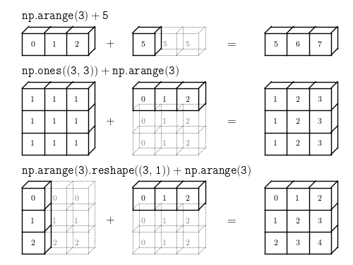

Numpy¶

NumPy es el paquete fundamental para la computación científica con Python. Contiene entre otras cosas:
un poderoso objeto de matriz N-dimensional
funciones sofisticadas (de transmisión)
herramientas para integrar código C / C ++ y Fortran
Álgebra lineal útil, transformada de Fourier y capacidades de números aleatorios
Además de sus obvios usos científicos, NumPy también se puede utilizar como un eficiente contenedor multidimensional de datos genéricos. Se pueden definir tipos de datos arbitrarios. Esto permite que NumPy se integre sin problemas y rápidamente con una amplia variedad de bases de datos.
NumPy tiene licencia bajo la licencia BSD, lo que permite su reutilización con pocas restricciones.
¿ Por qué usar Numpy ?¶
Las razones por las que debería usar NumPy en lugar de cualquier otro objeto _iterable en Python son:
NumPy proporciona una estructura de ndarray para almacenar datos numéricos de manera contigua.
También implementa operaciones matemáticas rápidas en ndarrays, que explotan esta contigüidad.
Brevedad de la sintaxis para las operaciones de matriz.
Un lenguaje como C o Java requeriría que escribamos un bucle para una operación matricial tan simple como C = A + B.
Operaciones básicas de NumPy¶
Las razones por las que debería usar NumPy en lugar de cualquier otro objeto _iterable en Python son:
NumPy proporciona una estructura de ndarray para almacenar datos numéricos de manera contigua.
También implementa operaciones matemáticas rápidas en ndarrays, que explotan esta contigüidad.
Brevedad de la sintaxis para las operaciones de matriz.
Un lenguaje como C o Java requeriría que escribamos un bucle para una operación matricial tan simple como C = A + B.
# importar libreria: numpy
import numpy as np
import time
import sys
# Arreglo de ceros: np.zeros(shape)
print("Zeros:")
print( np.zeros((3,3)) )
Zeros:
[[0. 0. 0.]
[0. 0. 0.]
[0. 0. 0.]]
# Arreglos de uno: np.ones(shape)
print("\nOnes:")
print( np.ones((3,3)) )
Ones:
[[1. 1. 1.]
[1. 1. 1.]
[1. 1. 1.]]
# Arreglo vacio: np.empty(shape)
print("\nEmpty:")
print( np.empty([2, 2]) )
Empty:
[[4.68745428e-310 0.00000000e+000]
[1.58101007e-322 6.92198063e-310]]
# Rango de valores: np.range(start, stop, step)
print("\nRange:")
np.arange(0., 10., 1.)
Range:
array([0., 1., 2., 3., 4., 5., 6., 7., 8., 9.])
# Grilla de valores: np.linspace(start, end, n_values)
print("\nRegular grid:")
print( np.linspace(0., 1., 9) )
Regular grid:
[0. 0.125 0.25 0.375 0.5 0.625 0.75 0.875 1. ]
# fijar semilla
np.random.seed(42)
# Sequencia aleatoria: np.random
print("\nRandom sequences:")
print( np.random.uniform(10, size=6) )
Random sequences:
[6.62913893 1.44357124 3.41205452 4.61207364 8.59583224 8.59604932]
# Construccion de arreglos: np.array( python_iterable )
print("\nArray constructor")
print( np.array([2, 3, 5, 10, -1]) )
Array constructor
[ 2 3 5 10 -1]
Manipulación de datos¶
En esta sección se presentan operaciones básicas de los arreglos de numpy.
# matrix
matriz_34 = np.array([
[1,2,3,4],
[5,6,7,8],
[9,10,11,12]
])
matriz_34
array([[ 1, 2, 3, 4],
[ 5, 6, 7, 8],
[ 9, 10, 11, 12]])
### tipo
type(matriz_34)
numpy.ndarray
### dimensiones
size = matriz_34.shape
print(f"rows: {size[0]}")
print(f"columns: {size[1]}")
rows: 3
columns: 4
### Escoger filas y columnas
print(f"first row: \n {matriz_34[0]} \n")
print(f"first col: \n {matriz_34[:,0]} \n")
print(f"first and second rows: \n {matriz_34[:2]} \n")
print(f"first and second cols: \n {matriz_34[:,:2]} \n")
first row:
[1 2 3 4]
first col:
[1 5 9]
first and second rows:
[[1 2 3 4]
[5 6 7 8]]
first and second cols:
[[ 1 2]
[ 5 6]
[ 9 10]]
Añadir filas y columnas
Para añadir una columna, se debe asegurar que se este agregando un arreglo de tamaño: \((1,n)\)
A1 = np.array([[0,0,0,0]]) # [[]]
A1.shape
(1, 4)
# add row
add_row = np.r_[matriz_34, A1]
add_row
array([[ 1, 2, 3, 4],
[ 5, 6, 7, 8],
[ 9, 10, 11, 12],
[ 0, 0, 0, 0]])
Para añadir una columna, se debe asegurar que se este agregando un arreglo de tamaño \((n,)\)
A2= np.array([0,0,0]) # []
A2.shape
(3,)
# add column
add_column = np.c_[matriz_34, A2]
add_column
array([[ 1, 2, 3, 4, 0],
[ 5, 6, 7, 8, 0],
[ 9, 10, 11, 12, 0]])
Observación:
Se debe tener cuidado al momento de operar vectores con dimensión \((1,n)\) o \((n,)\).
Para añadir filas o columnas a una matriz o juntar arreglos de numpy, se puede utilizar la función
np.concatenate().
Operaciones matemáticas básicas de matrices¶
La mayoría de las operaciones realizadas en NumPy se manejan por elementos, es decir, calcular C = A + B se traducirá en \( C [i, j] = A [i, j] + B [i, j] \). (La excepción es la transmisión y se explicará pronto).
A continuación hay una lista con las operaciones matemáticas más comunes.
# fijar semilla
np.random.seed(42)
# crear dos arreglos
A = np.array([
[1,2,3],
[4,5,6],
[7,8,9]
])
B = np.array([[9,8,7],[6,5,4],[3,2,1]])
print(f"Matrix A: \n {A} \n")
print(f"Matrix B: \n {B}")
Matrix A:
[[1 2 3]
[4 5 6]
[7 8 9]]
Matrix B:
[[9 8 7]
[6 5 4]
[3 2 1]]
# suma
print("Sum:")
print( A+B )
Sum:
[[10 10 10]
[10 10 10]
[10 10 10]]
# resta
print("\nSubtraction")
print( A-B )
Subtraction
[[-8 -6 -4]
[-2 0 2]
[ 4 6 8]]
# producto uno a uno
print("\nProduct")
print( A*B )
Product
[[ 9 16 21]
[24 25 24]
[21 16 9]]
# producto matricial
print("\nMatricial Product")
print( np.dot(A,B) )
Matricial Product
[[ 30 24 18]
[ 84 69 54]
[138 114 90]]
# potencia
print("\n Power")
print( A**2 )
Power
[[ 1 4 9]
[16 25 36]
[49 64 81]]
# algunas funciones comunes
print("\n np.exp()")
print( np.exp(A) )
print("\n np.sin()")
print( np.sin(A) )
print("\n np.cos()")
print( np.cos(A))
print("\n np.tan()")
print( np.tan(A) )
np.exp()
[[2.71828183e+00 7.38905610e+00 2.00855369e+01]
[5.45981500e+01 1.48413159e+02 4.03428793e+02]
[1.09663316e+03 2.98095799e+03 8.10308393e+03]]
np.sin()
[[ 0.84147098 0.90929743 0.14112001]
[-0.7568025 -0.95892427 -0.2794155 ]
[ 0.6569866 0.98935825 0.41211849]]
np.cos()
[[ 0.54030231 -0.41614684 -0.9899925 ]
[-0.65364362 0.28366219 0.96017029]
[ 0.75390225 -0.14550003 -0.91113026]]
np.tan()
[[ 1.55740772 -2.18503986 -0.14254654]
[ 1.15782128 -3.38051501 -0.29100619]
[ 0.87144798 -6.79971146 -0.45231566]]
Álgebra Lineal¶
En esta sección se presentan algunas propiedades comunmente ocupadas en álgebra lineal de matrices.
# crear un arreglo
A = np.array([[1,2],
[3,4]])
# transpuesta
print("Transpose: ")
print( A.T )
Transpose:
[[1 3]
[2 4]]
# determinante
print("determinant")
print( round(np.linalg.det(A) ,2))
determinant
-2.0
# Inversa
print("Inverse")
print( np.linalg.inv(A) )
Inverse
[[-2. 1. ]
[ 1.5 -0.5]]
# traza
print("Trace")
print( np.trace(A))
Trace
5
# sistemas lineales: Ax = b
b = np.array([[5.], [7.]])
print("linear system: Ax=b")
print("\nx = ")
print( np.linalg.solve(A, b) )
linear system: Ax=b
x =
[[-3.]
[ 4.]]
# Valores y vectores propios
eigenvalues, eigenvectors = np.linalg.eig(A)
print("eigenvalues")
print( eigenvalues )
print("\neigenvectors")
print( eigenvectors )
eigenvalues
[-0.37228132 5.37228132]
eigenvectors
[[-0.82456484 -0.41597356]
[ 0.56576746 -0.90937671]]
# descomposicion QR
Q,R = np.linalg.qr(A)
print("QR decomposition:")
print("\nQ")
print( Q )
print("\nR")
print( R )
QR decomposition:
Q
[[-0.31622777 -0.9486833 ]
[-0.9486833 0.31622777]]
R
[[-3.16227766 -4.42718872]
[ 0. -0.63245553]]
Broadcasting¶
Unas de las ventajas de numpy es que podemos hacer broadcasting, es to significa que numpy permite realizar operaciones binarias con arreglos de distintos tamaños.
{kind=link}
# example 01
a = np.arange(3)+ 5
print(f"np.arange(3)+ 5:\n{a}" )
np.arange(3)+ 5:
[5 6 7]
# example 02
b = np.ones((3,3))+np.arange(3)
print(f"np.ones((3,3))+np.arange(3):\n{b}" )
np.ones((3,3))+np.arange(3):
[[1. 2. 3.]
[1. 2. 3.]
[1. 2. 3.]]
# example 03
c = np.arange(3).reshape((3,1)) + np.arange(3)
print(f"np.arange(3).reshape((3,1)) + np.arange(3):\n{c }" )
np.arange(3).reshape((3,1)) + np.arange(3):
[[0 1 2]
[1 2 3]
[2 3 4]]
Python Lists vs. Numpy Arrays¶
La librería principal de Python son las listas. Una lista es el equivalente a Python de una matriz, pero es redimensionable y puede contener elementos de diferentes tipos.
Una pregunta común para principiantes es cuál es la verdadera diferencia aquí. La respuesta es el rendimiento. Las estructuras de datos de Numpy funcionan mejor en:
Tamaño: las estructuras de datos de Numpy ocupan menos espacio
Rendimiento: necesitan velocidad y son más rápidos que las listas
Funcionalidad: SciPy y NumPy tienen funciones optimizadas, como las operaciones de álgebra lineal integradas.
Memoria¶
Los principales beneficios del uso de matrices NumPy deberían ser un menor consumo de memoria y un mejor comportamiento en tiempo de ejecución.
Para las listas de Python: podemos concluir de esto que para cada elemento nuevo, necesitamos otros ocho bytes para la referencia al nuevo objeto. El nuevo objeto entero en sí consume 28 bytes. El tamaño de una lista lst sin el tamaño de los elementos se puede calcular con:
64 + 8 * len (lst) + + len (lst) * 28

NumPy ocupa menos espacio. Esto significa que una matriz entera arbitraria de longitud n en necesidades numpy se calcula por:
96 + n * 8 bytes
Para convensernos de esto, ejecutemos un ejemplo:
# example
# class: array
class Array:
"""
Clase array que da como rsultado el tiempo y espacio en
memoria de los objetos list y numpy array
"""
def __init__(self, size_of_vec):
self.size_of_vec = size_of_vec
def pure_python_version(self):
"""
Tiempo y espacio en memoria para objeto list
"""
t1 = time.time()
X = range(self.size_of_vec)
Y = range(self.size_of_vec)
Z = [X[i] + Y[i] for i in range(len(X)) ]
return (time.time() - t1,sys.getsizeof(Z) )
def numpy_version(self):
"""
Tiempo y espacio en memoria para objeto numpy array
"""
t1 = time.time()
X = np.arange(self.size_of_vec)
Y = np.arange(self.size_of_vec)
Z = X + Y
return (time.time() - t1,sys.getsizeof(Z) )
# parameters
size_of_vec = 1000000
class_array = Array(size_of_vec)
t1, size1 = class_array.pure_python_version()
t2, size2 = class_array.numpy_version()
# results
print(f"python list -- time: {round(t1,8)} seg, size: {size1} bytes")
print(f"numpy array -- time: {round(t2,8)} seg, size: {size2} bytes")
python list -- time: 0.36786675 seg, size: 8697456 bytes
numpy array -- time: 0.01345587 seg, size: 8000104 bytes